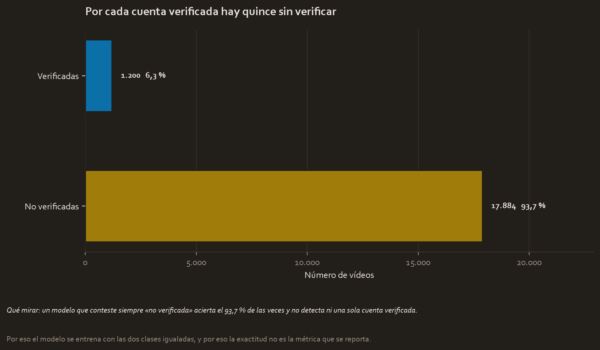
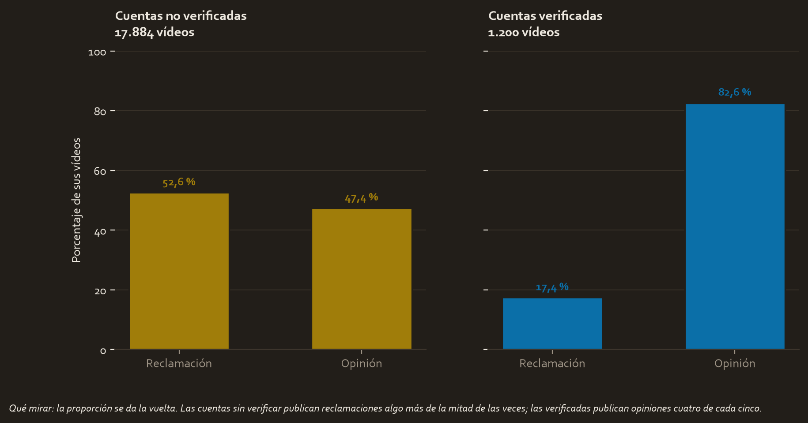
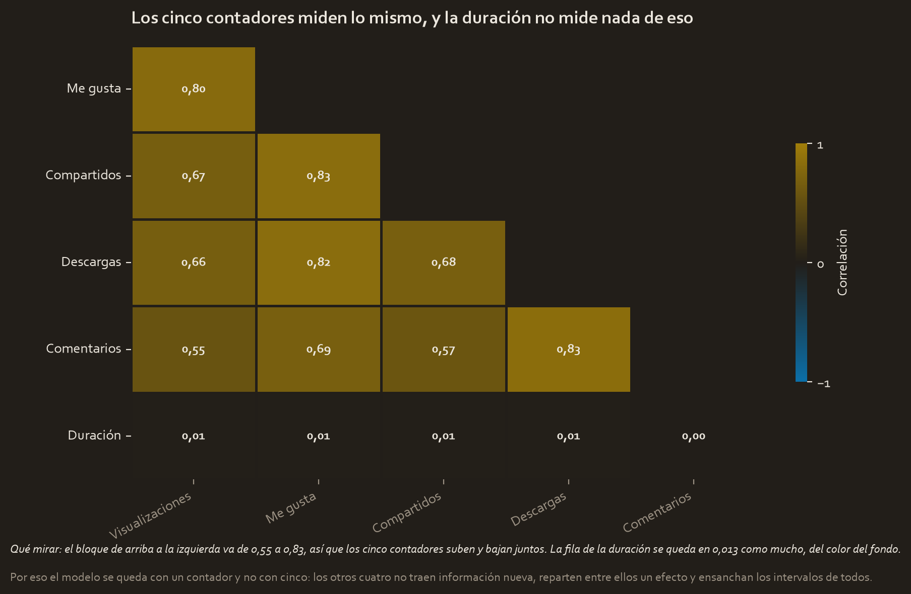
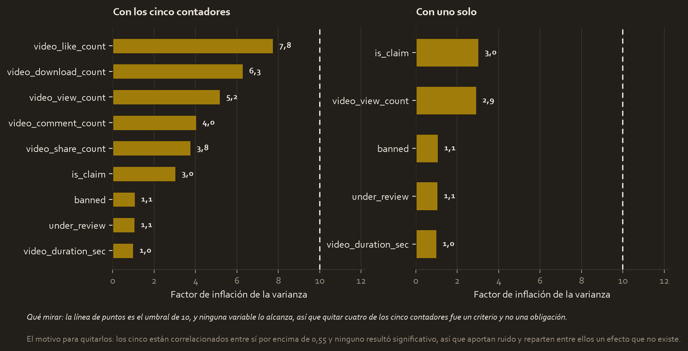
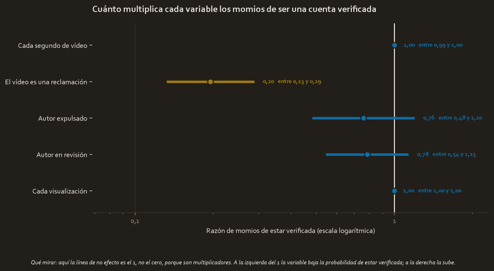
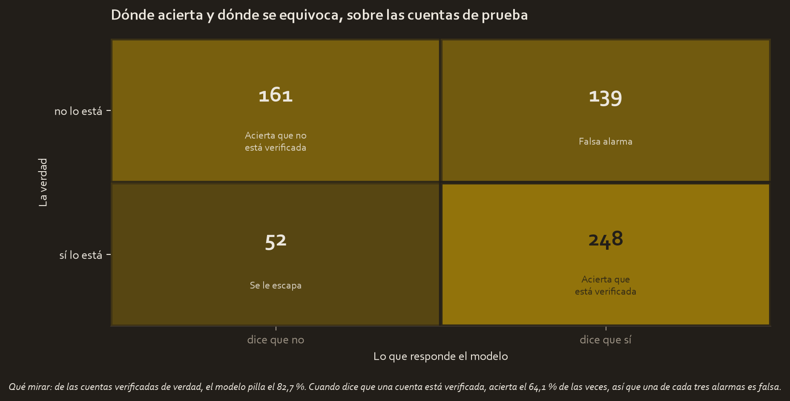

El encargo
TikTok tiene una cola de reclamaciones de usuarios esperando revisión humana, y quiere descongestionarla. El objetivo final, que llega en el curso siguiente, es clasificar automáticamente si un vídeo contiene una reclamación o una opinión.
Este proyecto es el paso previo: montar una regresión logística completa sobre una variable binaria que ya se conoce, verified_status, y aprender qué se puede esperar de ella.
La pregunta
¿Se puede saber si una cuenta está verificada mirando el vídeo que publicó?
Los datos
tiktok_dataset_raw.csv, 19.382 vídeos y 12 columnas. Datos sintéticos creados por TikTok para el certificado.
Y un aviso que va por delante porque decide cómo se mide todo lo demás:

El 93,7 % de las cuentas no están verificadas. Un modelo que conteste siempre "no está verificada" acierta el 93,7 % de las veces y no detecta a nadie. Con este reparto, la exactitud deja de ser una métrica y pasa a ser una trampa. Es el ejemplo del módulo 5, ahora con datos reales.
Lo que hubo que arreglar
298 filas tienen datos ausentes, siempre en el mismo bloque de siete columnas, y se eliminan. Quedan 19.084. No hay duplicados.
La clase mayoritaria se submuestrea hasta igualar a la minoritaria: 1.200 y 1.200, o sea 2.400 filas, descartando 16.684 vídeos. Sin eso, el camino más corto que tiene el modelo para reducir su error es no predecir nunca "verificada".
Consecuencia que hay que tener presente al leer los resultados: la exactitud que se reporta se compara contra el 50 % de una moneda, no contra el 93,7 % del archivo original.
Las categorías se codifican con una columna de unos y ceros por nivel menos uno: is_claim con la opinión como referencia, y banned y under_review con la cuenta activa como referencia.
Lo que mostró la exploración
El material del curso apunta a la duración del vídeo como la variable interesante. En estos datos la duración media es de 31,77 segundos en las cuentas verificadas y 32,47 en las no verificadas: siete décimas de segundo sobre vídeos de medio minuto.
La señal está en otro sitio:

La proporción se da la vuelta. Las cuentas sin verificar publican reclamaciones algo más de la mitad de las veces; las verificadas publican opiniones cuatro de cada cinco.
El modelo, y por qué este modelo
La variable a predecir es un sí o un no, así que corresponde regresión logística binomial, ajustada por máxima verosimilitud sobre 1.800 filas, con 600 reservadas.

Los cinco contadores de interacción (visualizaciones, me gusta, compartidos, descargas y comentarios) están correlacionados entre sí por encima de 0,55, y descargas con comentarios llega a 0,83. La duración, en cambio, no se parece a ninguno: 0,013 es lo más que llega, así que mide algo distinto y por eso se queda en el modelo.
Traducido a factores de inflación de la varianza, que es el número que decide:

Los de los cinco contadores van de 3,8 a 7,8. Ninguno alcanza el umbral de 10, así que quedarse con uno solo fue un criterio propio y no una obligación: aportan ruido y ninguno resultaba significativo.
De las cinco variables del modelo, una sola tiene efecto demostrado:

| Variable | Razón de momios | Intervalo del 95 % | p |
|---|---|---|---|
| El vídeo es una reclamación | 0,20 | 0,13 a 0,29 | 1,9e-16 |
| Autor en revisión | 0,78 | 0,54 a 1,13 | 0,196 |
| Autor expulsado | 0,76 | 0,48 a 1,20 | 0,234 |
| Cada segundo de vídeo | 1,00 | 0,99 a 1,00 | 0,63 |
| Cada visualización | 1,00 | 1,00 a 1,00 | 0,886 |
Los cuatro últimos intervalos cruzan el 1, que es la línea de no efecto cuando se habla de momios. Publicar una reclamación multiplica por 0,20 los momios de ser una cuenta verificada.
Los supuestos, uno por uno
| Supuesto | Estado |
|---|---|
| Resultado binario | Se cumple: verificada o no |
| Observaciones independientes | Razonable: vídeos distintos |
| Sin multicolinealidad | Se cumple tras quitar cuatro contadores, máximo 3,0 |
| Linealidad en el logit | No comprobable de forma útil: la única variable con efecto es binaria |
El último merece una línea. El supuesto exige que la relación sea recta en escala de logit, no en probabilidad. Con una variable binaria como única predictora con efecto, solo hay dos valores posibles y por dos puntos siempre pasa una recta, así que el supuesto se cumple por construcción y no dice nada.
El resultado, traducido
Sobre las 600 cuentas de prueba:

| Métrica | Valor | Qué significa |
|---|---|---|
| Sensibilidad | 0,827 | De cada 100 cuentas verificadas, pilla 83 |
| Precisión | 0,641 | De cada 100 alarmas, 64 son ciertas |
| F1 | 0,722 | |
| Exactitud | 0,682 | Contra el 50 % de una moneda |
| AUC | 0,697 | 0,5 sería azar |
Y aquí está el hallazgo del caso, que salió de un resultado que parecía un fallo: los umbrales 0,4 y 0,5 daban métricas idénticas hasta el último decimal.
No era un fallo. Las probabilidades que predice el modelo van de 0,204 a 0,651 y caen en dos montones separados por una banda vacía: cero casos entre 0,28 y 0,56. Cortar en 0,30, en 0,40 o en 0,55 produce exactamente las mismas 387 cuentas marcadas y los mismos 248 aciertos.
La causa es que el modelo se apoya en una sola variable binaria, así que se ha convertido en la regla "¿es una reclamación?" con dos pasos de aritmética por el medio. El umbral, que el módulo 5 presenta como una decisión de negocio, aquí no decide nada.
Es la misma forma que el hallazgo del Curso 3 en este mismo escenario, donde las visualizaciones resultaron ser dos poblaciones con un hueco entre ellas. Allí estaba en los datos; aquí, en la salida del modelo.
Qué se decide con esto
- No usarlo como clasificador automático. Un AUC de 0,697 y una de cada tres alarmas falsa no sostienen una decisión sin una persona delante.
- Sí usar el hallazgo. Lo que separa a los dos grupos es el tipo de contenido, no la actividad de la cuenta ni la duración del vídeo. Eso reorienta dónde buscar señal.
- Pasar al problema real. La variable que aquí resultó ser la única que importa es justamente la que hay que predecir en el curso siguiente, y la tubería completa ya está montada.
Limitaciones
- Al equilibrar las clases se descartaron 16.684 vídeos. El modelo aprende de una muestra que no se parece al reparto real de la plataforma.
- El pseudo R² es de 0,1046: el modelo explica poco. Es un resultado, no un fallo del procedimiento.
claim_statuses lo que el curso siguiente tiene que predecir. Usarla aquí como predictora es correcto para este ejercicio, pero **los dos proyectos no son independientes** y conviene recordarlo al comparar resultados.- Los datos son sintéticos. Las conclusiones valen como ejercicio y no describen TikTok.
Material completo
Estos tres proyectos no existían: se construyeron aquí. Los CSV se leen de tu carpeta del Curso 3 sin tocarlos, y todo lo demás es nuevo.
Informes y notas
- pace_plan.md 04_reports/pace_plan.md 5.1 KB
- executive_summary.md 04_reports/executive_summary.md 3.8 KB
- model_results.json 04_reports/model_results.json 3.1 KB
Código
- tiktok_logistic.py 02_scripts/tiktok_logistic.py 29.6 KB
- tiktok_curso4.ipynb tiktok_curso4.ipynb 13.9 KB